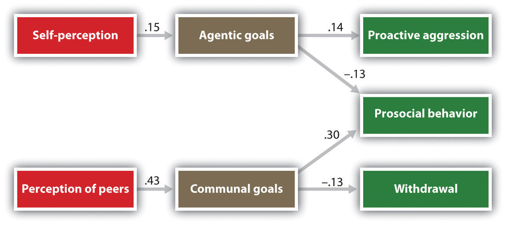
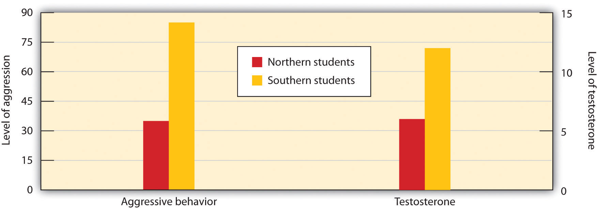

The occurrence of aggression is still another example of the interaction between person variables and situation variables. Although the social situation is extremely important, it does not influence everyone equally—not all people become aggressive when they view violence. You may be able to watch a lot of violent television and play a lot of violent video games without ever being aggressive yourself. On the other hand, other people may not be so lucky—remember that, on average, watching violence does increase aggression. Just as we may know some people who smoked cigarettes all their lives but never got lung cancer, I would still not recommend that anyone start smoking. The problem is that we don’t know if we are going to be affected until it is too late.
Let’s consider in this section the personality variables that are known to relate to aggression and how these variables may interact with the influence of the social situation.
Aggression occurs when we feel that we are being threatened by others, and thus personality variables that relate to perceived threat also predict aggression. Aggression is particularly likely among people who feel that they are being rejected by others whom they care about (Downey, Irwin, Ramsay, & Ayduk, 2004).Downey, G., Irwin, L., Ramsay, M., & Ayduk, O. (Eds.). (2004). Rejection sensitivity and girls’ aggression. New York, NY: Kluwer Academic/Plenum Publishers. In addition, people who experience a lot of negative affect, and particularly those who tend to perceive others as threatening, are likely to be aggressive (Crick & Dodge, 1994).Crick, N. R., & Dodge, K. A. (1994). A review and reformulation of social information-processing mechanisms in children’s social adjustment. Psychological Bulletin, 115(1), 74–101. When these people see behavior that may or not be hostile in intent, they tend to think that it is aggressive, and these perceptions can increase their aggression.
People also differ in their general attitudes toward the appropriateness of using violence. Some people are simply more likely to believe in the value of using aggression as a means of solving problems than are others. For many people, violence is a perfectly acceptable method of dealing with interpersonal conflict, and these people are more aggressive (Anderson, 1997; Dill, Anderson, & Deuser, 1997).Anderson, C. A. (1997). Effects of violent movies and trait hostility on hostile feelings and aggressive thoughts. Aggressive Behavior, 23(3), 161–178; Dill, K. E., Anderson, C. A., & Deuser, W. E. (1997). Effects of aggressive personality on social expectations and social perceptions. Journal of Research in Personality, 31(2), 272–292. The social situation that surrounds people also helps determine their beliefs about aggression. Members of youth gangs find violence to be acceptable and normal (Baumeister, Smart, & Boden, 1996),Baumeister, R. F., Smart, L., & Boden, J. M. (1996). Relation of threatened egotism to violence and aggression: The dark side of high self-esteem. Psychological Review, 103(1), 5–33. and membership in the gang reinforces these beliefs. For these individuals, the important goals are to be respected and feared, and engaging in violence is an accepted means to this end (Horowitz & Schwartz, 1974).Horowitz, R., & Schwartz, G. (1974). Honor, normative ambiguity and gang violence. American Sociological Review, 39(2), 238–251.
Perhaps you believe that people with low self-esteem would be more aggressive than those with high self-esteem. In fact, the opposite is true. Research has found that individuals with inflated or unstable self-esteem are more prone to anger and are highly aggressive when their high self-image is threatened (Kernis, Brockner, & Frankel, 1989; Baumeister et al., 1996).Kernis, M. H., Brockner, J., & Frankel, B. S. (1989). Self-esteem and reactions to failure: The mediating role of overgeneralization. Journal of Personality and Social Psychology, 57(4), 707–714; Baumeister, R. F., Smart, L., & Boden, J. M. (1996). Relation of threatened egotism to violence and aggression: The dark side of high self-esteem. Psychological Review, 103(1), 5–33. For instance, classroom bullies are those boys who always want to be the center of attention, who think a lot of themselves, and who cannot take criticism (Salmivalli & Nieminen, 2002).Salmivalli, C., & Nieminen, E. (2002). Proactive and reactive aggression among school bullies, victims, and bully-victims. Aggressive Behavior, 28(1), 30–44. It appears that these people are highly motivated to protect their inflated self-concepts and react with anger and aggression when it is threatened.
Figure 10.7 Self-Perceptions, Aggression, and Altruism
Children who saw themselves, and who were seen by peers, as having self-concerned motives were more aggressive and less altruistic than were children who were rated as more caring of others. Data are from Salmivalli et al. (2005).Salmivalli, C., Ojanen, T., Haanpaa, J., & Peets, K. (2005). “I’m OK but you’re not” and other peer-relational schemas: Explaining individual differences in children’s social goals. Developmental Psychology, 41(2), 363–375.
Underlying these observed individual differences in aggression are the fundamental motives of self-concern and other-concern. Salmivalli, Ojanen, Haanpaa, and Peets (2005)Salmivalli, C., Ojanen, T., Haanpaa, J., & Peets, K. (2005). “I’m OK but you’re not” and other peer-relational schemas: Explaining individual differences in children’s social goals. Developmental Psychology, 41(2), 363–375. asked fifth- and sixth-grade children to complete a number of measures describing themselves and their preferred relationships with others. In addition, each of the children was given a roster of the other students in their class and was asked to check off the names of the children who were most aggressive and most helpful. As you can see in Figure 10.7 "Self-Perceptions, Aggression, and Altruism", the underlying personality orientations of the children influenced how they were perceived by their classmates, and in a way that fits well with our knowledge about the role of self- and other-concern. Children who rated goals of self-concern highly (agreeing that it was important for instance that “others respect and admire me”) were more likely to be rated as acting aggressively, whereas children for whom other-concern was seen as more important (agreeing with statements such as “I feel close to others”) were more likely to be seen as altruistic.
Given what we know about the tendency toward self-enhancement and a desire for status, you will not be surprised to learn that there is a universal tendency for men to be more violent than women (Archer & Coyne, 2005; Crick & Nelson, 2002).Archer, J., & Coyne, S. M. (2005). An integrated review of indirect, relational, and social aggression. Personality and Social Psychology Review, 9(3), 212–230; Crick, N. R., & Nelson, D. A. (2002). Relational and physical victimization within friendships: Nobody told me there’d be friends like these. Journal of Abnormal Child Psychology, 30(6), 599–607. In comparison to women and girls, who use more nonphysical aggression such as shouting, insulting, spreading rumors, and excluding others from activities, men and boys prefer more physical and violent aggression—behaviors such as hitting, pushing, tripping, and kicking (Österman et al., 1998).Österman, K., Björkqvist, K., Lagerspetz, K. M. J., Kaukiainen, A., Landau, S. F., Fraczek, A., & Caprara, G. V. (1998). Cross-cultural evidence of female indirect aggression. Aggressive Behavior, 24(1), 1–8.
Strong gender differences in aggression have been found in virtually every culture that has been studied. Worldwide, about 99% of rapes are committed by men, as are about 90% of robberies, assaults, and murders (Graham & Wells, 2001).Graham, K., & Wells, S. (2001). The two worlds of aggression for men and women. Sex Roles, 45(9–10), 595–622. Among children, boys show higher rates of physical aggression than girls do (Loeber & Hay, 1997),Loeber, R., & Hay, D. (1997). Key issues in the development of aggression and violence from childhood to early adulthood. Annual Review of Psychology, 371–410. and even infants differ, such that infant boys tend to show more anger and poorer emotional regulation in comparison to infant girls. These findings will probably not surprise you because aggression, as we have seen, is due in large part to desires to gain status in the eyes of others, and (on average) men are more concerned about this than are women.
Although these gender differences exist, they do not mean that men and women are completely different, or that women are never aggressive. Both men and women respond to insults and provocation with aggression. In fact, the differences between men and women are smaller after they have been frustrated, insulted, or threatened (Bettencourt & Miller, 1996).Bettencourt, B., & Miller, N. (1996). Gender differences in aggression as a function of provocation: A meta-analysis. Psychological Bulletin, 119, 422–447. And men and women seem to use similar amounts of verbal aggression (Graham & Wells, 2001).Graham, K., & Wells, S. (2001). The two worlds of aggression for men and women. Sex Roles, 45(9–10), 595–622.
Gender differences in violent aggression are caused in part by hormones. Testosterone, which occurs at higher levels in boys and men, plays a significant role in aggression, and this is in part responsible for these differences. And the observed gender differences in aggression are almost certainly due, in part, to evolutionary factors. During human evolution, women primarily stayed near the home, taking care of children and cooking, whereas men engaged in more aggressive behaviors, such as defense, hunting, and fighting. Thus men probably learned to aggress, in part, because successfully fulfilling their duties required them to be aggressive. In addition, there is an evolutionary tendency for males to be more competitive with each other in order to gain status. Men who have high social status are more attractive to women, and having status allows them to attract the most desirable, attractive, and healthy mates (Buss & Shackelford, 1997).Buss, D. M., & Shackelford, T. K. (1997). Human aggression in evolutionary psychological perspective. Clinical Psychology Review, 17(6), 605–619.
But gender differences are not entirely determined by biology and evolution; many of these differences are the result of social learning. Imagine for a moment that 10-year-old Jean comes home from school and tells her father that she got in a big fight at school. How do you think he would respond to her? Now, imagine that her twin brother Jake comes home and reports the same thing. I think you can imagine that the father’s response would be different in this case. Boys are more likely to be reinforced for being aggressive than are girls. Aggressive boys are often the most popular children in elementary schools (Rodkin, Farmer, Pearl, & Van Acker, 2000)Rodkin, P. C., Farmer, T. W., Pearl, R., & Van Acker, R. (2000). Heterogeneity of popular boys: Antisocial and prosocial configurations. Developmental Psychology, 36(1), 14–24. because they can use their aggressiveness to gain and maintain social status. On the other hand, girls who successfully use nonphysical aggression may also gain social benefits.
Eagly and her colleagues have proposed that gender differences in aggression stem primarily from social norms and expectations about the appropriate roles of men and women (Eagly, 1987; Eagly & Wood, 1991).Eagly, A. H. (1987). Sex differences in social behavior: A social-role interpretation. Hillsdale, NJ: Lawrence Erlbaum; Eagly, A. H., & Wood, W. (1991). Explaining sex differences in social behavior: A meta-analytic perspective. Personality and Social Psychology Bulletin, 17, 306–315. Eagly notes that in many nations, women are expected to have more highly developed other-oriented attributes, such as friendliness and emotional expressivity and that when women do aggress, they use aggression as a means of expressing anger and reducing stress. Men, on the other hand, are socialized to value more self-oriented attributes, such as independence and assertiveness, and they are more likely to use aggression to attain social or material rewards (Campbell, Muncer, & Gorman, 1993).Campbell, A., Muncer, S., & Gorman, B. (1993). Sex and social representations of aggression: A communal-agentic analysis. Aggressive Behavior, 19(2), 125–135. One meta-analysis found that participants were more likely to indicate that men, rather than women, would and should engage in the most aggressive behaviors (Eagly & Steffen, 1986).Eagly, A. H., & Steffen, V. J. (1986). Gender and aggressive behavior: A meta-analytic review of the social psychology literature. Psychological Bulletin, 100, 309–330. Essentially, and suggesting that these different roles may be in part learned, the majority of males and females, worldwide, agree that males are both more likely and more willing to commit physically aggressive acts.
The United States continues to be an extremely violent country, much more so than other countries that are similar to it in many ways, such as Canada, Australia, New Zealand, and the Western European countries. On the other hand, other countries in Eastern Europe, Africa, Asia, and South America have more violence than does the United States. These differences show that cultures vary dramatically in how, and how much, their members aggress against each other.
When children enter a violent culture such as that of the United States, they may be socialized to be even more violent. In a study of students at a high school near Detroit, Michigan, Souweidane and Huesmann (1999)Souweidane, V., & Huesmann, L. R. (1999). The influence of American urban culture on the development of normative beliefs about aggression in Middle-Eastern immigrants. American Journal of Community Psychology, 27(2), 239–254. found that the children who had been born in the United States were more accepting of aggression than were children who had emigrated from the Middle East, especially if they did so after the age of 11. And in a sample of Hispanic schoolchildren in Chicago, children who had been in the United States longer showed greater approval of aggression (Guerra, Huesmann, & Zelli, 1993).Guerra, N. G., Huesmann, L. R., & Zelli, A. (1993). Attributions for social failure and adolescent aggression. Aggressive Behavior, 19(6), 421–434.
In addition to differences across cultures, there are also regional differences in the incidences of violence, for example, in different parts of the United States. The next section describes one of these differences—variations in a social norm that condones and even encourages responding to insults with aggression, known as the culture of honor.The social norm that condones and even encourages responding to insults with aggression.
The Culture of Honor
The homicide rate is significantly higher in the Southern and the Western states but lower in the Eastern and Northern states. One explanation for these differences is in terms of variation in cultural norms about the appropriate reactions to threats against one’s social status. These cultural differences apply primarily to men; some men react more violently than others when they believe that others are threatening them. The social norm that condones and even encourages responding to insults with aggression (the culture of honor) leads even relatively minor conflicts or disputes to be seen as challenges to one’s social status and reputation and can therefore trigger aggressive responses. The culture of honor is more prevalent in areas that are closer to the equator, including the southern parts of the United States.
In one series of experiments (Cohen, Nisbett, Bosdle, & Schwarz, 1996),Cohen, D., Nisbett, R. E., Bosdle, B., & Schwarz, N. (1996). Insult, aggression, and the southern culture of honor: An “experimental ethnography.” Journal of Personality and Social Psychology, 70, 945–960. researchers investigated how White male students who had grown up either in the Northern or in the Southern regions of the United States responded to insults. The experiments, which were conducted at the University of Michigan, involved an encounter in which the research participant was walking down a narrow hallway. The experimenters enlisted the help of a confederate who did not give way to the participant but who rather bumped into the participant and insulted him. Compared with Northerners, students from the South who had been bumped were more likely to think that their masculine reputations had been threatened, exhibited greater physiological signs of being upset, had higher testosterone levels, engaged in more aggressive and dominant behavior (gave firmer handshakes), and were less willing to yield to a subsequent confederate.
Figure 10.8
Students from Southern states expressed more anger and had greater levels of testosterone after being insulted than did students from Northern states (Cohen, Nisbett, Bosdle, & Schwarz, 1996).Cohen, D., Nisbett, R. E., Bosdle, B., & Schwarz, N. (1996). Insult, aggression, and the southern culture of honor: An “experimental ethnography.” Journal of Personality and Social Psychology, 70, 945–960.
In another test of the impact of culture of honor, Cohen and Nisbett (1997)Cohen, D., & Nisbett, R. E. (1997). Field experiments examining the culture of honor: The role of institutions in perpetuating norms about violence. Personality and Social Psychology Bulletin, 23(11), 1188–1199. sent letters to employers all over the United States from a fictitious job applicant who admitted having been convicted of a felony. To half the employers, the applicant reported that he had impulsively killed a man who had been having an affair with his fiancée and then taunted him about it in a crowded bar. To the other half, the applicant reported that he had stolen a car because he needed the money to pay off debts. Employers from the South and the West, places in which the culture of honor is strong, were more likely than employers in the North and East to respond in an understanding and cooperative way to the letter from the convicted killer, but there were no cultural differences for the letter from the auto thief.
A culture of honor, in which defending the honor of one’s reputation, family, and property is emphasized, may be a risk factor for school violence. More students from culture-of-honor states (i.e., Southern and Western states) reported having brought a weapon to school in the past month than did students from non-culture-of-honor states (i.e., Northern and Eastern states). Furthermore, over a 20-year period, culture-of-honor states had more than twice as many school shootings per capita as non-culture-of-honor states, suggesting that acts of school violence may be a response of defending one’s honor in the face of perceived social humiliation (Brown, Osterman, & Barnes, 2009).Brown, R. P., Osterman, L. L., & Barnes, C. D. (2009). School violence and the culture of honor. Psychological Science, 20(11), 1400–1405.
One possible explanation for regional differences in the culture of honor involves the kind of activities typically engaged in by men in the different regions (Nisbett & Cohen, 1996).Nisbett, R. E., & Cohen, D. (1996). Culture of honor: The psychology of violence in the South. Boulder, CO: Westview Press. While people in the Northern parts of the United States were usually farmers who grew crops, people from Southern climates were more likely to raise livestock. Unlike the crops grown by the Northerners, the herds were mobile and vulnerable to theft, and it was difficult for law enforcement officials to protect them. To be successful in an environment where theft was common, a man had to build a reputation for strength and toughness, and this was accomplished by a willingness to use swift, and sometimes violent, punishment against thieves. Areas in which livestock raising is more common also tend to have higher status disparities between the wealthiest and the poorest inhabitants (Henry, 2009).Henry, P. J. (2009). Low-status compensation: A theory for understanding the role of status in cultures of honor. Journal of Personality and Social Psychology, 97(3), 451–466. People with low social status are particularly likely to feel threatened when they are insulted and are particularly likely to retaliate with aggression.
In summary, as in virtually every case, a full understanding of the determinants of aggression requires taking a person-situation approach. Although biology, social learning, the social situation, and culture are all extremely important, we must keep in mind that none of these factors alone predicts aggression but that they work together to do so. For instance, we have seen that testosterone predicts aggressive behavior. But this relationship is stronger for people with low socioeconomic status than for those with higher socioeconomic status (Dabbs & Morris, 1990).Dabbs, J. M., & Morris, R. (1990). Testosterone, social class, and antisocial behavior in a sample of 4,462 men. Psychological Science, 1(3), 209–211. And children who have a genetic predisposition to aggression are more likely to become aggressive if they are abused as children (Caspi et al., 2002).Caspi, A., McClay, J., Moffitt, T., Mill, J., Martin, J., Craig, I. W.,…Poulton, R. (2002). Role of genotype in the cycle of violence in maltreated children. Science, 297(5582), 851–854. It seems that biological factors may predispose us to aggression, but that social factors act as triggers—a classic example of interactionism at work.
Preventing Violence
The social psychological study of aggression represents a classic example of the conundrum faced by social psychologists: Although we have developed a good understanding of the causes of aggression—and that understanding gets clearer every day—what exactly to do about it is an even more difficult question. Human aggression has remained with us since the beginning of time, and it is difficult to imagine that it is going to disappear soon.
Stopping the cycle of violence that characterizes so many families, neighborhoods, cities, and countries will not be easy. On the other hand, if we are serious about it, then we have a good idea where to begin to try to make a difference, because the principles that we have discussed in this chapter form a foundation both for understanding the causes of violence and for potentially reducing it. One thing that is certain is that reducing the prevalence of violence must involve changes in cognitions and emotions, as well as behavior. Also, this work must begin with children of very young ages, before aggressive behaviors, thoughts, and feelings become so well developed that they are difficult to change (Zigler, Taussig, & Black, 1992).Zigler, E., Taussig, C., & Black, K. (1992). Early childhood intervention: A promising preventative for juvenile delinquency. American Psychologist, 47(8), 997–1006.
With increasing life experiences, our schemas about the world become more well-defined and stable, and these established knowledge structures become more difficult to change. Not surprisingly, attempts at treating or rehabilitating violent adults (including such things as “boot camps,” individual and group therapy, and “scared straight” programs) have not been that successful. One problem is that these approaches do not address the wide range of factors that contribute to the development and maintenance of violent behavior. The most successful interventions appear to be those that address both person and situation factors, and which do so at a relatively young age.
To prevent the cycle of violence from beginning, we must reduce exposure to violence, particularly among children. There is no question that viewing violence breeds more violence. The more violence we see or participate in, and the more violence we experience, the more we commit. The relationship is not perfect, and it does not hold for everyone, but it is clear. Just as smoking cigarettes causes cancer, so viewing aggression causes violence. And just as many states and countries have developed advertising campaigns, taxes, and laws to reduce the use of cigarettes, particularly among minors, so we must work to reduce the exposure, particularly of children, to violent material. Governments can and have been involved in this effort (Huesmann & Skoric, 2003),Huesmann, L. R., & Skoric, M. M. (Eds.). (2003). Regulating media violence: Why, how and by whom? Mahwah, NJ: Lawrence Erlbaum. but the primary source will be parents, who must find out what their children are watching on TV, in movies, and on the Internet—as well as what video games they are playing—and monitor and restrict their use.
People must work to dispel the popular notion that engaging in aggressive actions is cathartic. When we attempt to reduce aggression by punching a pillow or pounding on our computer keyboard, we are bound to fail. The arousal and negative emotions that result from engaging in aggression do not reduce but rather increase the likelihood of engaging in more aggression. It is better to simply let the frustration dissipate over time, for instance, by distracting oneself with laughter or other activities than to attempt to fight aggression with more aggression.
We need to help people control their emotions. Most violence is emotional aggression—the result of negative affect and high arousal. We need to better teach children to think about how they are feeling, to consider the sources of their negative emotions, and to learn ways to respond to them that do not involve aggression. When we think more carefully about our situation, rather than simply responding in an emotional way, we can more carefully choose the most effective responses when we are frustrated or angry (Berkowitz, 1993).Berkowitz, L. (1993). Aggression: Its causes, consequences, and control. New York, NY: McGraw-Hill.
We must also work at the societal and government level by creating and enforcing laws that punish those who are aggressive, by increasing controls on the presence and availability of handguns and violent material more generally, and by creating programs to help the many victims of sexual and physical violence. In schools, it is essential that administrators, teachers, and staff become aware of the potential for violence and make themselves available as resources for students. School systems must have explicit policies that prohibit and specify sanctions for any student who teases, threatens, excludes, or otherwise mistreats another individual. Legislation designed to stop cyberbullying has been introduced in a number of U.S. states including New York, Missouri, Rhode Island, and Maryland.
Reducing the large income disparities between the poorest and the richest members of society will also be important. As a result of upward comparison, poverty creates frustration that begets violence.
Children (and adults) must be better educated about the causes of violence, because understanding the causes can help us learn to be less aggressive. Furthermore, because abuse of alcohol and other drugs so often leads to violence, better education about the effects of such substances, as well as support for individuals who need help dealing with them, is an important investment, not only for these individuals but also for the people around them.
We must also work to improve the situation in which children find themselves. Children who grow up in abusive homes learn that aggression is the norm; it is not surprising that they then respond to social problems through aggression. We must help these families learn to use reward rather than punishment and particularly to avoid violent punishment, which leads children to model the violent behavior. If we can reduce the extent of violence within families, then children who grow up in those families will likely be less violent themselves.
And we must help people find alternatives to violence by encouraging them to think about others more positively rather than as threats to their own status and self-worth. If we can increase other-concern, for instance, by helping children learn to better communicate with each other, and at the same time increase people’s positive feelings about themselves, we will create more positive social situations that reduce violence and aggression.